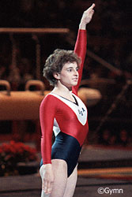

Hope Spivey (USA)
1988 Olympian
1991 NCAA Champion (AA, V, FX)

Hope was born in Suffolk, VA, on July 27, 1971. At age 13, she moved to Allentown, PA, to train at the Parkette club with the dream of competing in the Olympics. Hope realized that dream in 1988. After completing high school, she attended the University of Georgia on a full gymnastics scholarship and graduated in 1994.
Hope opened her own gym, Spivey's Gymnastics and Tumbling International, in 1998. She was inducted into the Virginia Sports Hall of Fame in 2004.
Competition Results
1985
Jr. American Classic: 4th AA
Jr. US Championships: 3rd AA
Jr. US Classic: 3rd AA
National Sports Festival: 4th AA, 2nd B, 2nd FX
1986
American Classic: 7th AA
Chunichi Cup: 10th AA
Goodwill Games: 16th AA, 6th FX
KIPS Invitational: 3rd AA, 2nd FX
US Championships: 2nd AA, 2nd UB, 3rd FX
USA-USSR Dual Meet: 2nd Team, 8th AA
1987
Pan American Games: 1st Team
US Championships: 5th AA, 3rd FX, 4th V, 6th B
USA-USSR Dual Meet: 2nd Team, 10th AA
1988
American Classic: 3rd AA
Intl. Mixed Pairs: 9th AA
Olympic Games: 4th Team, 30th AA (prelims)
Parkette Invitational: 1st AA, 1st V, 1st FX
US Championships: 3rd AA, 4th FX
US Olympic Trials: 3rd AA
USA-USSR Dual Meet: 2nd Team, 8th AA
1991
NCAA Championships: 3rd Team, 1st AA, 1st V, 1st FX, 3rd B, 7th UB
1992
NCAA Championships: 2nd Team, 7th AA, 5th FX, 8th V
1993
NCAA Championships: 1st Team, 2nd B, 4th FX
University Games: 2nd Team, 7th AA, 3rd V, 4th FX, 6th UB
1994
NCAA Championsihps: 3rd Team, 1st FX
This page was created on September
03, 2005.
© Gymn Forum